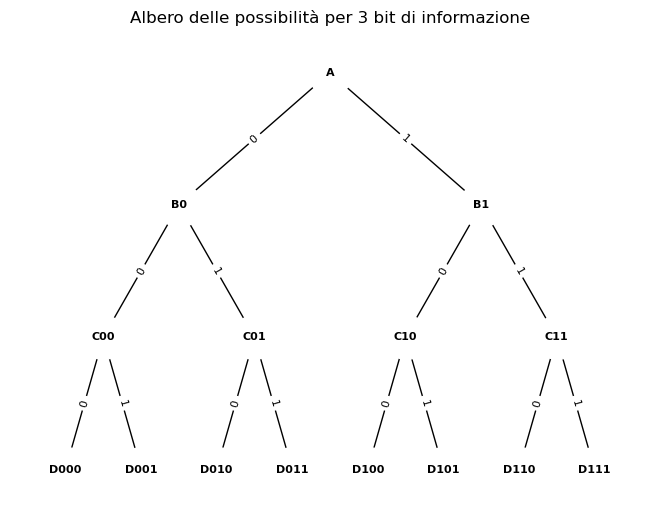

import numpy as np
import pandas as pd
import scipy.stats as stats
import matplotlib.pyplot as plt
import networkx as nx
from scipy.special import kl_div
import math
from collections import Counter
from scipy.stats import entropy
import heapq
from collections import defaultdict88 Entropia
Prerequisiti
- Per i concetti di base sulla teoria dell’informazione, si rimanda ai primi due capitoli di Information Theory: A Tutorial Introduction (Stone 2022).
Concetti e competenze chiave
- Comprendere e sapere calcolare l’informazione si Shannon.
- Comprendere e sapere calcolare l’entropia per variabili casuali discrete.
- Comprendere il concetto di entropia per variabili casuali continue.
Preparazione del Notebook
# Funzione per calcolare la lunghezza media del codice di Huffman
def huffman_encoding(probabilities):
# Coda con priorità (min-heap) per costruire l'albero di Huffman
heap = [[weight, [symbol, ""]] for symbol, weight in probabilities.items()]
heapq.heapify(heap)
# Costruzione dell'albero di Huffman
while len(heap) > 1:
lo = heapq.heappop(heap)
hi = heapq.heappop(heap)
for pair in lo[1:]:
pair[1] = "0" + pair[1]
for pair in hi[1:]:
pair[1] = "1" + pair[1]
heapq.heappush(heap, [lo[0] + hi[0]] + lo[1:] + hi[1:])
# Dizionario dei codici di Huffman
huffman_dict = sorted(heapq.heappop(heap)[1:], key=lambda p: (len(p[-1]), p))
# Calcolo della lunghezza media del codice
avg_length = 0
for symbol, code in huffman_dict:
avg_length += probabilities[symbol] * len(code)
return avg_length, huffman_dictIntroduzione
Information is the resolution of uncertainty.
(Shannon C, 1948)
In questo capitolo, descriveremo il concetto di entropia, una misura fondamentale sviluppata nell’ambito della teoria dell’informazione. L’entropia ci permette di quantificare l’incertezza associata a una distribuzione di probabilità e, di conseguenza, la quantità di informazione che un evento ci fornisce.
L’entropia è legata alla nostra capacità di prevedere l’esito di un evento: più un risultato è imprevedibile, maggiore sarà l’entropia. In termini più generali, l’entropia di una variabile casuale misura quanto è incerto o “sorprendente” il valore che essa assumerà in media. Se ogni possibile esito ha la stessa probabilità di verificarsi, l’entropia sarà massima. Se invece alcuni esiti sono molto più probabili di altri, l’entropia diminuirà, poiché l’incertezza complessiva è ridotta.
Un’intuizione sull’entropia può essere ottenuta considerando il seguente esempio. Pensiamo a un sacchetto di palline colorate. Se il sacchetto contiene solo palline di un unico colore, possiamo essere sicuri di quale pallina estrarremo ogni volta. Non c’è alcuna incertezza o sorpresa, quindi l’entropia è pari a zero. Tuttavia, se il sacchetto contiene un numero uguale di palline di diversi colori, ogni estrazione è un’incognita: l’incertezza è massima e, di conseguenza, lo è anche l’entropia.
Il concetto di entropia va ben oltre questo semplice esempio. Esso si applica a qualunque situazione in cui ci sia un insieme di risultati possibili con probabilità diverse. La bellezza dell’entropia risiede nella sua capacità di misurare l’incertezza in modo quantitativo e preciso, fornendo una base per analizzare sistemi complessi e imprevedibili.
In questo capitolo, ci concentreremo sul significato matematico dell’entropia, esplorando come può essere calcolata per diverse distribuzioni di probabilità e come essa si collega alla quantità di informazione che un sistema può fornire. Inizieremo con esempi semplici, come l’entropia di una moneta equa o di un dado, per poi estendere il concetto a situazioni più complesse.
88.1 Che cos’è l’Informazione?
L’informazione è solitamente misurata in bit, e un bit di informazione permette di scegliere tra due alternative ugualmente probabili. La parola bit deriva da binary digit (cioè uno zero o un uno).
Per capire come l’informazione possa essere misurata in bit, consideriamo il seguente esempio discusso da Stone (2022). Immagina di essere in piedi all’incrocio in punto A nell’immagine seguente e di voler raggiungere il punto segnato D011.

Nota che questa figura rappresenta una vista dall’alto, che non hai; tutto ciò che hai è un bivio davanti a te e una decisione da prendere. Se non hai alcuna informazione preventiva su quale strada scegliere, il bivio in A fornisce due alternative ugualmente plausibili. Se ti dico di andare a sinistra, hai ricevuto un bit di informazione. Se rappresentiamo la mia istruzione con una cifra binaria (0=sinistra e 1=destra), questa cifra binaria ti fornisce un bit di informazione, che ti indica quale strada scegliere.
Ora immagina di passeggiare lungo la strada e di arrivare a un altro bivio, al punto B. Anche in questo caso, poiché non hai idea di quale strada scegliere, una cifra binaria (1=destra) fornisce un bit di informazione, permettendoti di scegliere la strada giusta, che porta al punto segnato C. Una terza cifra binaria (1=destra) ti fornisce un altro bit di informazione, che ti permette di scegliere nuovamente la strada giusta, portandoti al punto segnato D011.
Ci sono ora otto strade tra cui puoi scegliere quando parti da A, quindi tre cifre binarie (che ti forniscono tre bit di informazione) ti permettono di scegliere tra otto alternative ugualmente plausibili; 8 corrisponde a \(2 \cdot 2 \cdot 2 = 2^3 = 8\).
Riassumiamo il tuo viaggio in termini di numero di alternative ugualmente probabili:
- Se hai 1 bit di informazione, puoi scegliere tra 2 alternative ugualmente probabili (ovvero \(2^1 = 2\)).
- Se hai 2 bit di informazione, puoi scegliere tra 4 alternative ugualmente probabili (ovvero \(2^2 = 4\)).
- Se hai 3 bit di informazione, puoi scegliere tra 8 alternative ugualmente probabili (ovvero \(2^3 = 8\)).
Possiamo riformulare questo in termini più generali se usiamo \(n\) per rappresentare il numero di incroci e \(m\) per rappresentare il numero di destinazioni finali. Se sei arrivato a \(n\) incroci, hai effettivamente scelto tra
\[ m = 2^n \text{ destinazioni finali}. \]
La complessità di questo viaggio può essere rappresentata sia come il numero (\(m\)) di possibili destinazioni finali sia come il numero (\(n\)) di incroci che devono essere attraversati per raggiungere una data destinazione. Se ci sono \(m = 8\) possibili destinazioni, quanti incroci \(n\) questo implica? In altre parole, date otto destinazioni, quale potenza di 2 è necessaria per ottenere 8? In questo caso, sappiamo che la risposta è \(n=3\), ovvero il logaritmo in base 2 di 8. Quindi, \(3=\log_2 8\) è il numero di incroci implicato da otto destinazioni.
In generale, il logaritmo di \(m\) è la potenza a cui 2 deve essere elevato per ottenere \(m\); cioè, \(m = 2^n\). Equivalentemente, dato un numero \(m\) che vogliamo esprimere come logaritmo,
\[ n = \log_2 m. \]
Il pedice 2 indica che stiamo usando logaritmi in base 2.
In termini di logaritmi, possiamo riassumere il viaggio da un altro punto di vista, ovvero in termini di bit:
- Se devi scegliere tra 2 alternative ugualmente probabili (ovvero \(2^1\)) hai bisogno di \(1(= \log_2 2^1 = \log_2 2)\) bit di informazione.
- Se devi scegliere tra 4 alternative ugualmente probabili (ovvero \(2^2\)) hai bisogno di \(2(= \log_2 2^2 = \log_2 4)\) bit di informazione.
- Se devi scegliere tra 8 alternative ugualmente probabili (ovvero \(2^3\)) hai bisogno di \(3(= \log_2 2^3 = \log_2 8)\) bit di informazione.
In generale, se devi scegliere tra \(m\) alternative ugualmente probabili, hai bisogno di
\[ n = \log_2 m \]
bit di informazione.
In sintesi, se hai \(n\) bit di informazione puoi scegliere tra \(m = 2^n\) alternative ugualmente probabili. Equivalentemente, se devi scegliere tra \(m\) alternative ugualmente probabili, hai bisogno di \(n = \log_2 m\) bit di informazione. Detto in altri termini, per l’esempio considerato, per arrivare a \(D\) partendo da \(A\), sono necessarie 3 domande la cui risposta binaria è destra/sinistra.
88.2 La Sorpresa e l’Informazione di Shannon
Immaginiamo di avere una moneta che cade testa il 90% delle volte. In questo caso, ci aspettiamo che il risultato più probabile sia testa e saremo meno sorpresi rispetto a quando il risultato è croce. Più improbabile è un risultato, maggiore sarà la sorpresa nel vederlo.
Una prima idea per misurare la sorpresa di un risultato \(x\) è definirla come inversamente proporzionale alla probabilità di \(x\): \(1/p(x)\). Tuttavia, Shannon ha dimostrato che la sorpresa è meglio descritta come il logaritmo di \(1/p(x)\), definendo così l’informazione di Shannon, espressa in bit se si usa la base 2 del logaritmo. L’informazione di Shannon di un risultato è quindi data da:
\[ \begin{equation} h(x) = \log_2 \frac{1}{p(x)} = -\log_2 p(x) \text{ bit}. \end{equation} \tag{88.1}\]
88.3 Sorpresa e Probabilità
Per essere sorpresi, dobbiamo sapere quali risultati sono più sorprendenti e quali meno. In altre parole, dobbiamo conoscere la probabilità dei possibili risultati che collettivamente definiscono la distribuzione di probabilità \(p(X)\) della variabile aleatoria \(X\). Quindi, l’informazione di Shannon implicita in un dato insieme di risultati può essere valutata solo se conosciamo la probabilità di ciascun risultato.
Un modo per ottenere questa conoscenza è osservare i risultati di un esperimento aleatorio per un lungo periodo di tempo. Utilizzando i risultati osservati, possiamo stimare la probabilità di ciascun risultato e quindi costruire una stima di \(p(X)\). Ma comunque sia acquisita, abbiamo bisogno della distribuzione di probabilità \(p(X)\) per valutare l’informazione di Shannon di ciascun risultato.
88.4 Entropia come Informazione di Shannon Media
Di solito, non ci interessa la sorpresa di un singolo risultato, ma piuttosto la sorpresa media associata a un insieme di possibili risultati. Questa media è chiamata entropia e si indica con \(H(X)\). L’entropia rappresenta la sorpresa media che si otterrebbe osservando i risultati di una variabile aleatoria \(X\) con distribuzione di probabilità \(p(X)\).
Se lanciamo una moneta molte volte, l’entropia della distribuzione dei risultati può essere approssimata dalla media delle informazioni di Shannon di ciascun lancio:
\[ H(X) \approx \frac{1}{n} \sum_{i=1}^{n} h(x_i). \tag{88.2}\]
88.5 Entropia di una Moneta Equa
Se una moneta è equa, allora \(p(x_h) = 0.5\) e la sorpresa di osservare una testa è
\[ \begin{align} h(x_h) &= \log_2 \frac{1}{p(x_h)} \notag\\ &= \log_2(1/0.5) = 1 \text{ bit}.\notag \end{align} \]
Dato che \(p(x_t) = 0.5\), la sorpresa di osservare una testa (o una croce) è di un bit.
Possiamo trovare la sorpresa media lanciando la moneta, diciamo, 100 volte, misurando la sorpresa di ogni risultato e poi calcolando la media dei 100 risultati. Se lanciamo una moneta 100 volte, ci aspettiamo di osservare testa circa 50 volte e croce circa 50 volte. Se osserviamo esattamente 50 teste e 50 croci, la quantità media di sorpresa diventa
\[ \begin{align} H(X) &= \frac{1}{100} \left( \sum_{i=1}^{50} \log_2 \frac{1}{p(x_h)} + \sum_{i=1}^{50} \log_2 \frac{1}{p(x_t)} \right)\notag\\ &=1 \text{ bit per lancio della moneta}\notag. \end{align} \]
In sintesi, poiché la quantità di sorpresa o informazione di Shannon fornita dall’osservazione del risultato di ogni lancio di questa moneta equa è di un bit, ne segue che l’informazione media \(H(X)\) di ogni lancio è anch’essa di un bit.
88.5.1 Interpretazione dell’Entropia (1)
Se consideriamo una distribuzione di probabilità uniforme, una variabile con entropia \(H(X)\) espressa in bit fornisce sufficiente informazione (nel senso della teoria dell’informazione di Shannon) per distinguere tra \(m = 2^{H(X)}\) alternative ugualmente probabili. In altre parole, l’entropia misura la quantità di informazione contenuta in una variabile, esprimendola in termini di quante scelte ugualmente probabili sono possibili per quella variabile.
88.6 Entropia di una moneta sbilanciata
Una moneta sbilanciata ha una quantità media di informazione (o incertezza) inferiore rispetto a una moneta equa.
La sorpresa associata a testa è:
\[ h(\text{testa}) = \log\left(\frac{1}{0.9}\right) = 0.15 \text{ bit}, \]
mentre la sorpresa associata a croce è maggiore:
\[ h(\text{croce}) = \log\left(\frac{1}{0.1}\right) = 3.32 \text{ bit}. \]
88.6.1 Interpretazione dell’Entropia (2)
Se immaginiamo di lanciare la moneta tante volte, la sorpresa media o entropia di questa moneta, considerando considerando \(p(\text{testa}) = 0.9\) e \(p(\text{croce}) = 0.1\), è:
\[H(X) = 0.9 \log_2 \frac{1}{0.9} + 0.1 \log_2 \frac{1}{0.1} = 0.469 \text{ bit per lancio}.\]
L’incertezza media per questa moneta sbilanciata è dunque inferiore a quella di una moneta equa (che ha un’entropia di 1 bit), anche se l’incertezza associata all’esito meno probabile (croce) è maggiore (3.32 bit) rispetto a quella di una moneta equa (1 bit). In generale, nessuna moneta sbilanciata può avere un’entropia media maggiore di quella di una moneta equa.
Poiché \(p(\text{testa}) = 0.9\) e \(p(\text{croce}) = 0.1\), possiamo scrivere la formula dell’entropia come:
\[ H(X) = p(\text{testa}) \log\left(\frac{1}{p(\text{testa})}\right) + p(\text{croce}) \log\left(\frac{1}{p(\text{croce})}\right) = 0.469 \text{ bit per lancio}. \]
Per semplificare ulteriormente, possiamo rappresentare l’entropia sommando sui due possibili esiti (testa e croce):
\[ H(X) = \sum_{i=1}^{2} p(x_i) \log\left(\frac{1}{p(x_i)}\right) = 0.469 \text{ bit per lancio}. \]
Questa entropia di 0.469 bit implica che l’informazione contenuta in 1.000 lanci di questa moneta potrebbe essere rappresentata usando solo 469 bit binari, cioè \(1000 \times 0.469\).
Possiamo interpretare questo risultato considerando l’entropia nei termini di un numero di alternative ugualmente probabili. La variabile \(X\), che rappresenta il lancio della moneta, potrebbe essere vista come equivalente a una variabile che può assumere:
\[ m = 2^{H(X)} = 2^{0.469} \approx 1.38 \text{ valori equiprobabili}. \]
A prima vista, questo risultato può sembrare strano, dato che stiamo considerando una moneta, che ha solo due esiti possibili. Tuttavia, interpretare l’entropia nei termini di un numero equivalente di valori ugualmente probabili ci offre un’intuizione sull’informazione rappresentata da una variabile. Un modo per pensare a questo concetto è di immaginare che una moneta con entropia \(H(X) = 0.469\) bit abbia la stessa quantità di incertezza di un dado ipotetico con 1.38 facce.
88.7 Caratteristiche dell’Entropia
Entropia Massima: L’entropia raggiunge il suo valore massimo quando tutti gli esiti di un evento hanno la stessa probabilità di verificarsi. In questa situazione, l’incertezza è massima, poiché nessun indizio ci permette di prevedere quale sarà il risultato. Questo rappresenta il massimo grado di imprevedibilità.
Entropia Minima: L’entropia è minima quando l’esito di un evento è completamente certo (con probabilità pari a 1) o impossibile (con probabilità pari a 0). In questi casi, non esiste incertezza né sorpresa, e quindi non c’è alcuna informazione aggiuntiva da ottenere osservando il risultato.
88.8 Additività dell’Entropia per Eventi Indipendenti
L’entropia è additiva nel caso di eventi indipendenti. Ciò significa che, se si verificano due o più eventi indipendenti, l’entropia totale della loro combinazione è pari alla somma delle entropie di ciascun evento considerato singolarmente. Questa proprietà deriva dall’additività dei logaritmi, che permette di sommare le entropie individuali per ottenere l’entropia complessiva.
88.8.1 Stimare l’Entropia da una Distribuzione di Probabilità
Consideriamo una variabile casuale discreta \(X\), che rappresenta una serie di eventi distinti, ciascuno con una probabilità associata. Per una variabile discreta \(X\) con possibili valori \(x_1, x_2, \dots, x_n\) e una funzione di massa di probabilità \(p(x) = \Pr\{X = x\}\), l’entropia \(H(X)\) misura l’incertezza complessiva associata a questa distribuzione di probabilità e si calcola con la formula:
\[ \begin{equation} H(X) = -\sum_{x \in X} p(x) \log_2 p(x). \end{equation} \tag{88.3}\]
In questo contesto, l’entropia \(H(X)\) rappresenta l’incertezza media relativa alla collezione di eventi descritti dalla variabile \(X\). La formula fornisce una somma pesata delle sorprese associate a ciascun esito, dove la sorpresa di un risultato \(x\) dipende dalla sua improbabilità, calcolata come \(-\log_2 p(x)\). Il segno negativo è necessario perché i logaritmi di probabilità, essendo inferiori a 1, sono negativi; il segno negativo li trasforma in valori positivi, che rappresentano correttamente la sorpresa o l’informazione associata.
Ogni termine della somma, \(-p(x) \log_2 p(x)\), esprime la quantità di informazione o sorpresa relativa a un singolo evento, ponderata dalla sua probabilità \(p(x)\). Quanto più uniformemente distribuite sono le probabilità degli eventi, tanto maggiore sarà l’entropia complessiva. Al contrario, se uno o più eventi sono molto più probabili rispetto agli altri, l’entropia sarà inferiore, riflettendo una minore incertezza.
In sintesi, l’entropia \(H(X)\) misura l’incertezza complessiva associata alla distribuzione di probabilità di una variabile casuale discreta \(X\). Essa quantifica la sorpresa media che ci si può aspettare quando si osserva un evento estratto casualmente da questa collezione.
Esempio 88.1 Supponiamo di avere un dado con otto facce. Ci sono \(m = 8\) esiti possibili:
\[ A_x = \{1,2,3,4,5,6,7,8\}. \]
Poiché il dado è equo, tutti gli otto esiti hanno la stessa probabilità di \(p(x) = 1/8\), definendo così una distribuzione di probabilità uniforme:
\[ p(X) = \left\{\frac{1}{8}, \frac{1}{8}, \frac{1}{8}, \frac{1}{8}, \frac{1}{8}, \frac{1}{8}, \frac{1}{8}, \frac{1}{8}\right\}. \]
L’entropia di questa distribuzione può essere calcolata come:
\[ H(X) = - \sum_{i=1}^{8} \frac{1}{8} \log_2 \frac{1}{8} = \log_2 8 = 3 \text{ bit}. \]
Poiché l’informazione associata a ciascun esito è esattamente 3 bit, anche l’entropia media è di 3 bit, che rappresenta l’incertezza complessiva della variabile \(X\).
Dato che \(X\) ha un’entropia di \(H(X) = 3\) bit, possiamo dire che \(X\) può rappresentare fino a:
\[ m = 2^{H(X)} = 2^3 = 8 \]
esiti equiprobabili.
Esempio 88.2 Sia \(X\) una variabile casuale discreta che può assumere i valori \(a, b, c,\) e \(d\) con una distribuzione di probabilità di massa \(p(a) = \frac{1}{2}\), \(p(b) = \frac{1}{4}\), \(p(c) = \frac{1}{8}\), e \(p(d) = \frac{1}{8}\), rispettivamente. L’entropia di \(X\), che misura l’incertezza associata alla distribuzione di probabilità, è calcolata come:
\[ H(X) = -\left(\frac{1}{2} \log_2 \frac{1}{2} + \frac{1}{4} \log_2 \frac{1}{4} + \frac{1}{8} \log_2 \frac{1}{8} + \frac{1}{8} \log_2 \frac{1}{8}\right). \]
Calcolando i singoli termini, otteniamo:
\[ H(X) = -\left(\frac{1}{2} \cdot (-1) + \frac{1}{4} \cdot (-2) + \frac{1}{8} \cdot (-3) + \frac{1}{8} \cdot (-3)\right) = \frac{7}{4} \text{ bits}. \]
È importante notare che l’entropia \(H(X)\) dipende esclusivamente dalla distribuzione di probabilità dei valori di \(X\) e non dai valori stessi.
88.8.2 Stimare l’Entropia in un Campione di Osservazioni
L’entropia può essere calcolata non solo per distribuzioni teoriche, ma anche per campioni di dati osservati. In questo caso, l’entropia ci fornisce una misura di quanto sia incerta o imprevedibile la distribuzione dei valori all’interno del campione.
Esempio 88.3 Per comprendere meglio questo concetto, possiamo calcolare l’entropia associata a insiemi di osservazioni. Consideriamo i due vettori seguenti:
\[ \begin{align} x &= \{1, 2, 3, 3, 3, 3, 2, 1, 3, 3, 2, 1, 1, 4, 4, 3, 1, 2\}, \notag\\ y &= \{3, 4, 1, 1, 1, 1, 4, 3, 1, 1, 4, 3, 3, 2, 2, 1, 3, 4\}. \notag \end{align} \]
Troviamo l’entropia associata a ciascuno di essi.
# Definisco i vettori
x = np.array([1, 2, 3, 3, 3, 3, 2, 1, 3, 3, 2, 1, 1, 4, 4, 3, 1, 2])
y = np.array([3, 4, 1, 1, 1, 1, 4, 3, 1, 1, 4, 3, 3, 2, 2, 1, 3, 4])
# Calcolo il numero di occorrenze di ciascun valore
x_counts = Counter(x)
y_counts = Counter(y)
# Calcolo l'entropia di ciascun vettore
x_probabilities = np.array(list(x_counts.values())) / len(x)
y_probabilities = np.array(list(y_counts.values())) / len(y)
# Calcolo l'entropia manualmente per ciascun vettore
def calculate_entropy(probabilities):
return -np.sum(probabilities * np.log2(probabilities))
# Calcolo manualmente l'entropia
x_entropy = calculate_entropy(x_probabilities)
y_entropy = calculate_entropy(y_probabilities)
# Risultati
x_entropy, y_entropy(1.8776402831734211, 1.8776402831734211)Entrambi i vettori hanno la stessa entropia di 1.8776 bit.
Esempio 88.4 Consideriamo un gioco con due giocatori. In questo gioco, vengono considerate solo le 13 carte del seme di quadri da un mazzo standard di 52 carte, e si suppone che ognuna di queste carte abbia la stessa probabilità di essere scelta. Il primo giocatore sceglie una carta tra le 13 carte di quadri. Il secondo giocatore deve indovinare quale carta di quadri è stata scelta facendo domande a cui il primo giocatore risponderà esclusivamente con “sì” o “no”. L’obiettivo è determinare il numero minimo di domande necessarie per identificare esattamente la carta scelta.
In questa situazione, la scelta del primo giocatore può essere rappresentata come un vettore one-hot di dimensione 13: \(X = (x_1, \dots, x_{13}) \in \{0, 1\}^{13}\), dove esattamente un elemento \(x_i\) è uguale a 1 (indica la carta scelta), mentre gli altri sono uguali a 0. Quindi ci sono 13 possibili scelte.
L’incertezza associata alla scelta casuale di una carta tra le 13 disponibili è quantificata dall’entropia. Poiché tutte le carte hanno la stessa probabilità di essere selezionate, l’entropia della distribuzione uniforme è data dalla formula:
\[ H(X) = \log_2 13 \approx 3.7 \text{ bit}. \]
Questa quantità rappresenta l’incertezza iniziale, ovvero il numero di bit di informazione necessari per determinare esattamente quale delle 13 carte è stata scelta.
Ogni risposta data dal primo giocatore (“sì” o “no”) fornisce 1 bit di informazione, poiché riduce il numero di possibilità di circa la metà. Dato che l’incertezza iniziale è di circa 3.7 bit, il numero minimo di domande necessarie è:
\[ \frac{3.7}{1} = 3.7 \text{ risposte}, \]
che in pratica significa che saranno necessarie almeno 4 domande per determinare con certezza la carta scelta.
Per esempio, possiamo dividere il set iniziale \(E^{(0)}\), formato dalle 13 carte di quadri, in due sottoinsiemi:
\[ E_1^{(0)} = \{1, 2, 3, 4, 5, 6, 7\}, \quad E_2^{(0)} = \{8, 9, 10, 11, 12, 13\}. \]
La prima domanda potrebbe essere: “La carta scelta si trova in \(E_1^{(0)}\)?”.
- Se la risposta è sì, eliminiamo \(E_2^{(0)}\);
- Se la risposta è no, eliminiamo \(E_1^{(0)}\).
In entrambi i casi, ci resta un nuovo set \(E^{(1)}\) contenente al massimo 7 carte. Ripetiamo il processo dividendo nuovamente in due sottoinsiemi. Nel caso peggiore, possiamo dividere \(E^{(1)}\) in:
\[ E_1^{(1)} = \{1, 2, 3, 4\}, \quad E_2^{(1)} = \{5, 6, 7\}, \]
e chiedere se la carta scelta è in \(E_1^{(1)}\).
Dopo ogni domanda, riduciamo progressivamente il set di possibili carte fino ad arrivare a una singola carta. Con la quarta domanda possiamo determinare esattamente quale carta è stata scelta.
In questo modo, abbiamo confermato che il numero minimo di domande per identificare la carta è 4, dato che l’entropia iniziale della scelta tra 13 carte è di circa 3.7 bit.
88.9 Entropia di una Variabile Casuale Continua
Nel caso delle variabili casuali continue, il concetto di entropia viene generalizzato sostituendo la somma con un integrale. Questo è necessario perché le variabili continue possono assumere un numero infinito di valori all’interno di un intervallo.
Per una variabile casuale continua \(X\) con una funzione di densità di probabilità \(p(x)\), l’entropia (nota anche come entropia differenziale) è definita dalla seguente formula:
\[ H(X) = -\int p(x) \log_2(p(x)) \, dx, \]
dove:
- \(p(x)\) è la funzione di densità di probabilità di \(X\),
- l’integrale è calcolato su tutto il dominio di \(X\).
L’entropia di una variabile casuale continua fornisce una misura dell’incertezza o della sorpresa associata alla distribuzione della variabile. Come nel caso discreto, l’entropia continua quantifica l’incertezza associata a \(X\). Una PDF molto concentrata (ad esempio, una distribuzione con picchi stretti) implica bassa entropia, poiché l’evento è più prevedibile. Una PDF distribuita uniformemente implica alta entropia, poiché l’evento è meno prevedibile.
Il segno negativo assicura che l’entropia sia una quantità positiva, in quanto \(\log_2(p(x))\) è negativo per \(p(x)\) compreso tra 0 e 1.
Esempi relativi al calcolo dell’entropia nel caso di variabili continue sono fornite nel Appendice U.
88.10 La Codifica Huffman
La codifica Huffman è un metodo utilizzato per rappresentare gli esiti di una variabile casuale in un formato binario, ottimizzando la lunghezza del codice necessario per descrivere questi esiti. Questo algoritmo crea una rappresentazione binaria che permette di comprimere i dati senza perdita di informazioni, utilizzando una codifica efficiente basata sulla frequenza dei simboli.
Nella codifica Huffman, i simboli più frequenti sono rappresentati da codici binari più brevi, mentre i simboli meno frequenti sono rappresentati da codici più lunghi. Questo approccio assicura che la lunghezza media del codice per rappresentare una sequenza di simboli sia la più corta possibile, ottimizzando così lo spazio necessario per la memorizzazione o la trasmissione dei dati. In questo modo, la codifica Huffman riesce a ridurre la quantità di bit necessari per codificare una variabile casuale, rispettando il principio della teoria dell’informazione che lega la probabilità di un simbolo alla lunghezza del codice a esso associato.
La codifica Huffman può essere descritta nel modo seguente.
- Creazione della lista di simboli e frequenze:
- In questa fase, si analizza il testo o i dati da comprimere.
- Si conta quante volte appare ogni simbolo (che può essere un carattere, una parola, o qualsiasi unità di informazione).
- Si crea una tabella che elenca ogni simbolo unico e la sua frequenza di apparizione.
- Per esempio, in un testo, potremmo avere: A: 10, B: 5, C: 12, D: 3, E: 15.
- Costruzione dell’albero binario:
- Si inizia creando un nodo foglia per ogni simbolo. Ogni nodo contiene il simbolo e la sua frequenza.
- Poi si segue questo processo iterativo:
- Si selezionano i due nodi con le frequenze più basse.
- Si crea un nuovo nodo padre che ha questi due come figli.
- La frequenza del nuovo nodo padre è la somma delle frequenze dei figli.
- Si aggiunge questo nuovo nodo all’insieme dei nodi disponibili.
- Si ripete finché non rimane un solo nodo (la radice dell’albero).
- Durante questo processo, i simboli più frequenti tendono a rimanere vicini alla radice, mentre quelli meno frequenti si trovano più in profondità nell’albero.
- Assegnazione dei codici:
- Una volta costruito l’albero, si assegna un bit ‘0’ a ogni ramo sinistro e un bit ‘1’ a ogni ramo destro.
- Per trovare il codice di un simbolo, si parte dalla radice e si segue il percorso fino alla foglia corrispondente, registrando i bit incontrati lungo il cammino.
- I simboli più frequenti avranno codici più corti (più vicini alla radice), mentre quelli meno frequenti avranno codici più lunghi.
La codifica di Huffman è efficace perché:
- È ottimale per la compressione di simboli singoli.
- Garantisce la decodifica univoca (essendo una codifica prefissa).
- Si adatta alle specifiche frequenze dei simboli nel messaggio da codificare.
In conclusione, la codifica Huffman è un metodo di compressione dei dati che utilizza le proprietà della probabilità e della teoria dell’informazione per creare una rappresentazione binaria ottimizzata, riducendo così la quantità di dati necessari per rappresentare una sequenza di simboli.
Esempio 88.5 Supponiamo di avere questi simboli e frequenze: A:20, B:10, C:8, D:5. Generiamo i codici di Huffman per ciascun simbolo.
- Creiamo nodi foglia per ogni simbolo: (A:20), (B:10), (C:8), (D:5)
- Uniamo D e C: ((D:5,C:8):13)
- Uniamo B con (D,C): (B:10,(D:5,C:8):13):23)
- Infine, uniamo A con il resto: (A:20,(B:10,(D:5,C:8):13):23):43
L’albero finale sarà:
(43)
/ \
(20) (23)
| / \
A (10) (13)
| / \
B (5) (8)
| |
D CI codici risultanti saranno:
- A: 0
- B: 10
- C: 111
- D: 110
Questo è un esempio di come la codifica di Huffman assegna codici più brevi ai simboli più frequenti, ottimizzando così la lunghezza totale del messaggio codificato.
88.11 L’Entropia come Lunghezza Media del Codice Binario
L’entropia, in termini di teoria dell’informazione, rappresenta la quantità media di informazione necessaria per descrivere gli esiti di una variabile casuale. In altre parole, può essere interpretata come la lunghezza media del codice binario utilizzato per rappresentare questi esiti, tenendo conto delle loro probabilità.
Consideriamo una variabile casuale discreta \(X\) che può assumere quattro valori: \(A, B, C,\) e \(D\), con le seguenti probabilità:
- \(p(A) = 0.4\)
- \(p(B) = 0.3\)
- \(p(C) = 0.2\)
- \(p(D) = 0.1\)
Utilizzando la codifica Huffman per questa variabile casuale, otteniamo i seguenti codici binari:
- \(A\) = “0”
- \(B\) = “10”
- \(C\) = “110”
- \(D\) = “111”
La lunghezza media del codice in bit può essere calcolata come segue:
\[ \begin{align} \text{Lunghezza media} &= p(A) \times \text{lunghezza di } A + p(B) \times \text{lunghezza di } B\notag \\ &\quad + p(C) \times \text{lunghezza di } C\notag + p(D) \times \text{lunghezza di } D\notag. \end{align} \]
Sostituendo i valori delle probabilità e le lunghezze dei codici:
\[ \begin{align} \text{Lunghezza media} &= (0.4 \times 1) + (0.3 \times 2) + (0.2 \times 3) + (0.1 \times 3)\notag\\ &= 0.4 + 0.6 + 0.6 + 0.3 = 1.9 \text{ bit}.\notag \end{align} \]
Possiamo replicare questo risultato usando una funzione Python:
# Distribuzione di probabilità di una variabile casuale discreta
probabilities = {"A": 0.4, "B": 0.3, "C": 0.2, "D": 0.1}
# Calcolo della lunghezza media del codice di Huffman
avg_length, huffman_dict = huffman_encoding(probabilities)
print(f"Lunghezza media del codice di Huffman: {avg_length:.2f} bit/simbolo")
print("Codici di Huffman per ciascun simbolo:")
for symbol, code in huffman_dict:
print(f"{symbol}: {code}")Lunghezza media del codice di Huffman: 1.90 bit/simbolo
Codici di Huffman per ciascun simbolo:
A: 0
B: 10
C: 111
D: 110Calcoliamo ora l’entropia \(H(X)\) della variabile casuale \(X\):
\[ \begin{align} H(X) &= -\sum p(x) \log_2 p(x) \notag\\ &= -(0.4 \log_2 0.4 + 0.3 \log_2 0.3 + 0.2 \log_2 0.2 + 0.1 \log_2 0.1)\notag\\ &= 1.8465 \text{ bit}. \end{align} \]
In questo esempio, l’entropia è \(H(X) = 1.8465\) bit. La lunghezza media del codice Huffman calcolata è di \(1.9\) bit, un valore molto vicino all’entropia. Questo ci permette di interpretare l’entropia come la lunghezza media teorica minima del codice binario necessario per rappresentare la variabile casuale \(X\). Possiamo affermare che la codifica di Huffman è quasi ottimale, poiché si avvicina molto al limite inferiore stabilito dall’entropia. In altre parole, l’entropia rappresenta effettivamente la lunghezza minima media del codice binario necessaria per descrivere la distribuzione di probabilità di una variabile casuale.
88.12 Applicazioni Psicologiche
Un esempio di applicazione dell’entropia dell’informazione in psicologia riguarda dell’effetto della sorpresa nello studio dell’umore. La sorpresa, o entropia, è stata documentata sia in laboratorio che in contesti naturali come un fattore che influenza le emozioni. Ad esempio, Spector (1956) osservò l’effetto della probabilità a priori sulla soddisfazione dei soggetti in risposta a una promozione lavorativa. I risultati indicano che gli esiti meno probabili a priori (e quindi più sorprendenti quando si verificano) hanno un impatto maggiore sull’umore. In altre parole, quando un evento inatteso e sorprendente si verifica, esso tende a influenzare l’umore in modo più forte rispetto a eventi previsti e probabili.
88.13 Riflessioni Conclusive
In questo capitolo, abbiamo esaminato il concetto di entropia, evidenziando il suo ruolo fondamentale nel quantificare l’incertezza all’interno delle distribuzioni di probabilità. Nel capitolo successivo vedremo come l’entropia possa essere impiegata per valutare la “distanza” tra un modello teorico e i dati reali. A tale scopo, introdurremo la divergenza di Kullback-Leibler, una misura che quantifica le discrepanze tra due distribuzioni di probabilità.
Informazioni sull’Ambiente di Sviluppo
%load_ext watermark
%watermark -n -u -v -iv -w -mLast updated: Fri Jul 26 2024
Python implementation: CPython
Python version : 3.12.4
IPython version : 8.26.0
Compiler : Clang 16.0.6
OS : Darwin
Release : 23.5.0
Machine : arm64
Processor : arm
CPU cores : 8
Architecture: 64bit
numpy : 1.26.4
matplotlib: 3.9.1
scipy : 1.14.0
pandas : 2.2.2
arviz : 0.18.0
Watermark: 2.4.3